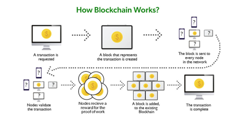
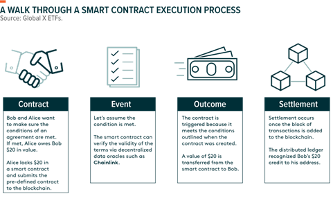

Blockchain technology is recently being used in all sorts of applications. With the advent of Web3, blockchain technology is being used now in web applications. A major reason for this is smart contracts that enable us to implement decentralized applications in trust-less environments. Along with its adoption, attacks exploiting smart contract vulnerabilities are inevitably growing. To counter these attacks and avoid security breaches, several approaches have been explored such as documenting vulnerabilities, simulations or model checking using formal verification. However, these approaches are inadequate to capture the blockchain and users’ behavior properties. We propose to use higher-order-logic theorem proving as an alternative strategy to formally model and verify smart contract behavior in its execution environment. We will verify smart contract properties by proving theorems on the formal model.
A smart contract is a piece of code that lives on the blockchain client. It is triggered and executed by specific transactions. The result of a smart contract execution changes global state, and the transaction is then stored in the blockchain. In this way, smart contracts can be used to implement decentralized applications. However, smart contracts – since they are a piece of code – are vulnerable to many security threats and attacks. As smart contracts operate in a distributed execution environment, taking adequate security measures is a challenge to this day.
Many approaches have been taken to analyze and test security measures for smart contracts. To guarantee correctness, many experts resort to using Formal Methods. Formal methods are a way to model a system mathematically and then use verification to prove properties related to the system. Traditional methods such as simulations aren’t adequate to guarantee safety because these methods may skip some critical test cases and model checking has scalability issues. Theorem Proving is a technique where we model the system using mathematical axioms and propositions that guarantee completeness thus is powerful technique in analyzing a system.